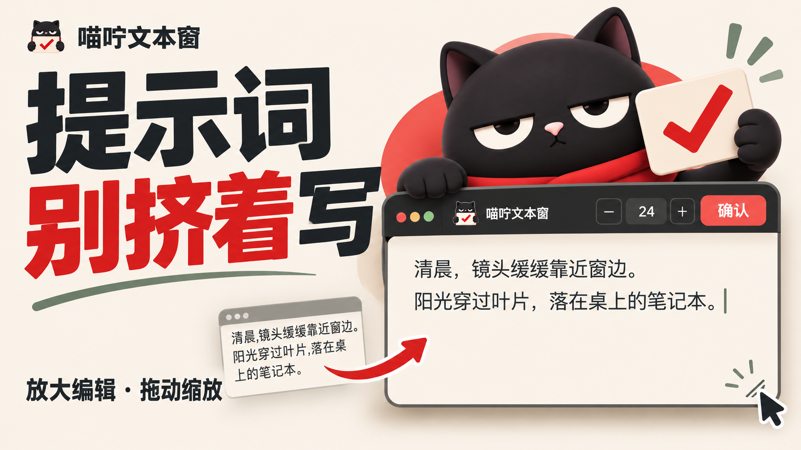
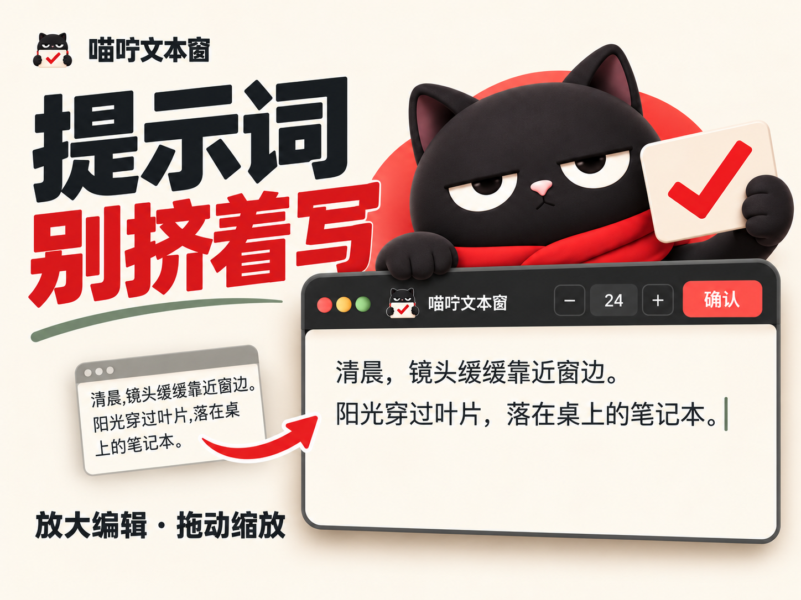
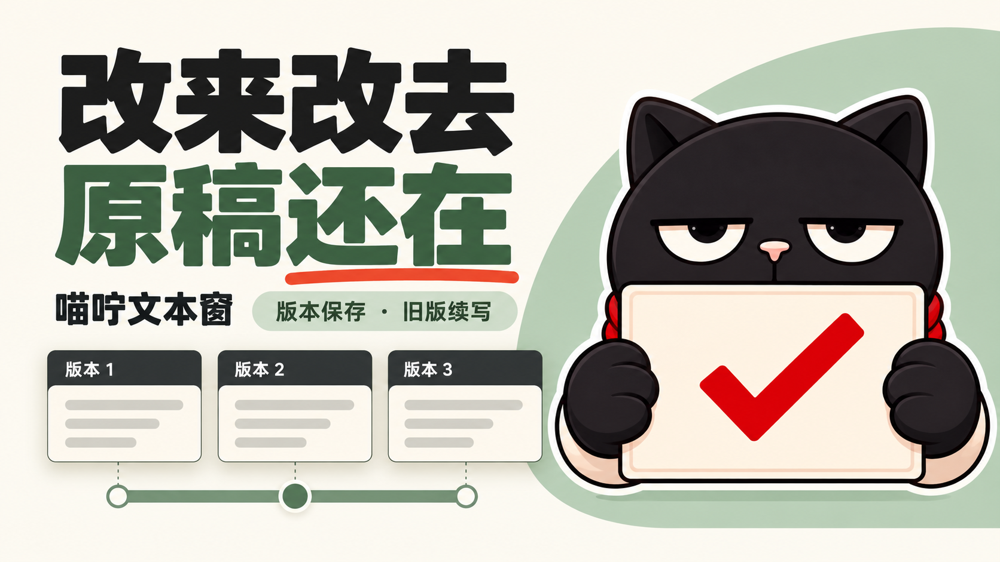
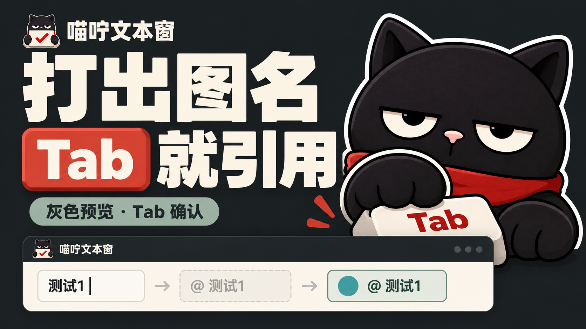
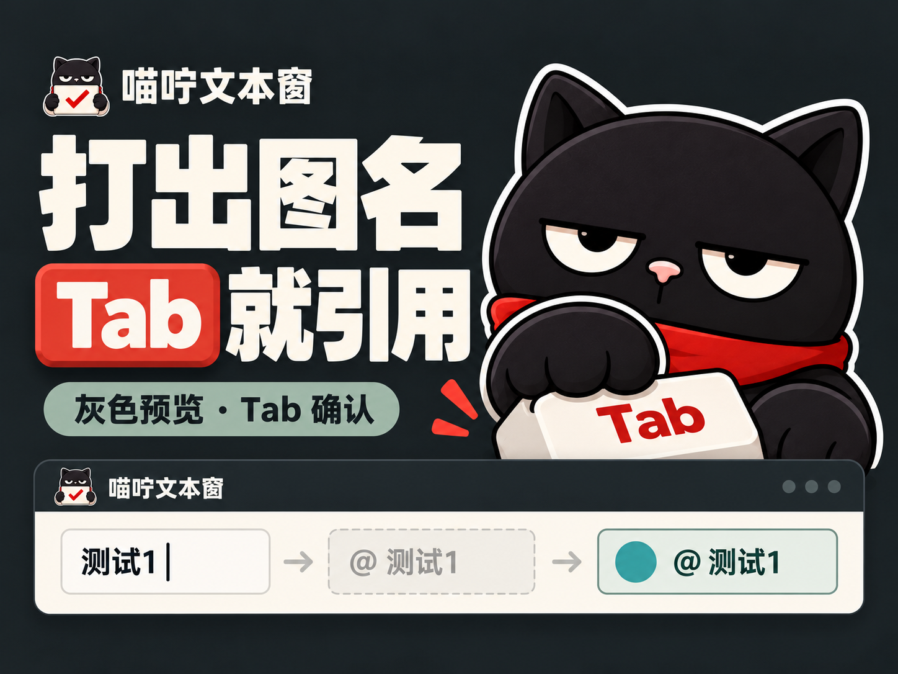

MIORNING · 喵咛文本窗
三款封面，三个切入点。
推荐用 A「提示词 / 别挤着写」做本次整体插件介绍的主封面。
每款均提供横版与 4:3。横版为原生 1672 × 941，接近 16:9；4:3 为 1448 × 1086，比例精确。三款 4:3 均独立构图，未裁切横版。点击图片可查看原图。
封面为 AI 生成的宣传插画，并非平台截图。查看真实插件界面（本地测试页）。
AI-generated promotional illustrations, not platform screenshots. The linked interface uses a local test fixture.

A · 提示词 / 别挤着写
推荐主封面



视频标题
提示词框太小了，我做了个能拖能放大的「喵咛文本窗」
简介
画布里的提示词一长，就得在小框里来回滚。我自己用着难受，就做了这个「喵咛文本窗」。点开输入框，窗口能拖动、调宽高和字号。回车换行，Esc 确认后收起，文字留在原来的框里。窗口关掉后也会记住上次设置。插件包附有 GPL 开源代码，黑猫也一起上岗了。
B · 改来改去 / 原稿还在



视频标题
提示词改来改去，原稿终于不用靠复制粘贴留了
简介
改提示词最怕改到最后，发现前面那版更好。这次我给喵咛文本窗加了版本记录：有原文时先存原稿，空白框首次输入从版本 1 开始；后续编辑确认后保存新版本。旧版随时能翻，基于旧版继续改会另存一版，原稿还在。版本都保存在本机，可以删除，也能拖动上方滑块找回来，少一点反复复制粘贴。
C · 打出图名 / Tab 就引用




视频标题
LibTV 写提示词：打出参考图名，按 Tab 就能引用
简介
连线图片多了，写提示词时来回找引用挺打断思路。我给喵咛文本窗加了图名提示：在 LibTV 里输入完整参考图名称，先显示灰色预览，按 Tab 才真正引用。引用成功后替换图名，无法确认成功时保留文字，原来的 @ 菜单照常用。这个小功能，也是我自己写长提示词时最想省下的一步。